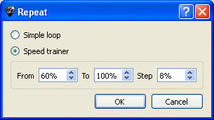
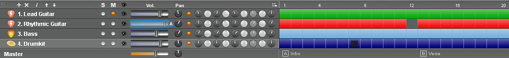

Hinweis: Sie kõnnen dabei die Tastenkombination
[Alt+Tab] und [Alt+Tab] benutzen, um zwischen einzelnen
Markern während der Wiedergabe hin und her zu navigieren.
Hinweis: Sie kõnnen dabei die Tastenkombination
[Alt+Tab] und [Alt+Tab] benutzen, um zwischen einzelnen
Markern während der Wiedergabe hin und her zu navigieren.In Guitar Pro wurde Wert darauf gelegt, die Arbeit mit der Partitur mõglichst einfach zu machen. Es stehen daher viele Mõglichkeiten zur Verfügung, um eine Partitur
abzuspielen.
Um die Partitur anzuhõren, kõnnen Sie die Funktionen des Menüs Ton benutzen, die Leertaste der PC-Tastatur, oder die Symbolleiste Ton:
Um nur einen speziellen Bereich der Partitur wiederzugeben, markieren Sie bitte vorher diesen Abschnitt mit der Maus.
Hinweis: Sie kõnnen dabei die Tastenkombination
[Alt+Tab] und [Alt+Tab] benutzen, um zwischen einzelnen
Markern während der Wiedergabe hin und her zu navigieren.
Im Menü Ton > Endlosschleife / Geschwindigkeitstrainer kann man die ganze Partitur oder ein Teil davon in Endlosschleife spielen. Sie haben folgende Kombinationsmõglichkeiten:

Um eine speziellen Bereich in Endlosschleife wiedergeben zu kõnnen müssen Sie diesen vorher mit der Maus markiert haben.
Mit 'Normal Wiederholen' wird der ausgewählte
bzw. markierte Bereich der Partitur ohne
Veränderung solange wiedergegeben bis Sie die Wiedergabe unterbrechen.
Durch Auswahl des Geschwindigkeitstrainers, kõnnen Sie einen bestimmten
Abschnitt der Partitur endlos wiederholen und dabei das Tempo für jeden
Durchlauf steigern. Sie haben dabei die Mõglichkeit der Eingabe eines
Anfangs- und Endtempos in Prozent und die Steigerung des Tempos für jeden
Durchlauf, ebenfalls in Prozent.
über das Menü Ton > Tempo
rufen Sie den Dialog für die Tempoangabe auf. Damit legen Sie das Tempo
fest, mit dem die Partitur beim Abspielen vom Anfang an wiedergegeben
wird. Sie kõnnen aber jederzeit, an irgendeiner Stelle der Partitur, ein
Tempowechsel vornehmen.
Während der Wiedergabe wird das momentane Tempo in der Guitar Pro Statusleiste
angezeigt.
Durch Aktivieren des Auswahlknopfes für ein Relatives Tempo kõnnen Sie ein Teilungsverhältnis, bzw. einen Multiplikationsfaktor, zum eigentlich definierten Tempo setzten, ohne das Tempo der Datei selber dabei zu verändern. Damit kõnnen Sie die Abspielgeschwindigkeit des Stückes verlangsamen oder beschleunigen, beginnend mit einem Wert von x0.25 (4 Mal langsamer) bis zu maximal x2 (Doppelte Geschwindigkeit). Um diese Funktion zu deaktivieren setzen Sie einfach den Wert auf 1.00.
über das Menü Ton > Metronom aktivieren Sie das Metronom. In der Registerkarte Allgemein im Guitar Pro Menü Optionen kõnnen Sie die Lautstärke des Metronomklick festlegen und bestimmen.
Das Metronom kann auch alleine benutzt werden.
Legen Sie hierzu eine neue leere Partitur an oder wählen Sie einen leeren Takt aus.
Mit dem Menü Ton > Anzählen kõnnen Sie festlegen, dass Guitar Pro einen Takt vor der Wiedergabe mit einem Metronomklick anzählt.. Das Anzählen, mit einem Leertakt wird auch bei einem Taktwechsel während des Abspielens,
vorgenommen, wenn Sie zum Beispiel während der Wiedergabe einen anderen
Takt mit der Maus auswählen.

über das Mischpult kõnnen Sie die Audioparameter und vorhandene Effekte der Spur einstellen, wie die Lautstärke, die Balance, Chorus, Hall, welches Instrument, etc, … .
Die von Ihnen festgelegten Werte sind von Anfang der Spur an gültig,
Sie kõnnen sie aber auch an einem beliebigen Takt innerhalb der Partitur
verändern, indem Sie den Dialog für Effekteinstellung
und Tempo - Änderungen aufrufen.
Ebenso kõnnen Einstellungen des Mischpultes auch während der Wiedergabe geändert werden, indem Sie zum Beispiel während der Wiedergabe der Partitur auf ein Instrument einer Spur klicken und ein anderes Instrument auswählen. So kõnnen Sie unterschiedliche Instrumente während des Abspielens ausprobieren, ohne nach Auswahl eines Instrumentes die Wiedergabe immer wieder neu starten zu müssen.
Innerhalb des Mischpultes befindet sich ein Auswahlfeld mit ein Kästchen
"Solo" und ein Auswahlfeld mit "Stumm"
(engl. Mute) steht. Damit kõnnen Sie in einer mehrspurigen Partitur eine
oder mehre Spuren ohne die anderen Spuren abspielen, oder eine oder mehrere
Spuren stummschalten. Wenn Sie nur eine oder zwei der vorhandenen Spuren
hõren mõchten, ist es schneller die Solo Option zu nutzen. Andrerseits
wäre es schneller, ein oder zwei Spuren stumm zu schalten (z.B. um Sie
selbst zu spielen), wenn Sie die Option Stummschalten verwenden würden.
Der EQ-Regler kõnnen ausgeblendet werden, indem Sie auf das kleine Symbol
klicken.
Der Knopf fügt eine Spur ein.
Der Knopf  lõscht eine Spur.
lõscht eine Spur.
Der Knopf õffnen das Fenster Spureigenschaften.
Mit den Knõpfen  kõnnen Sie die Spuren verschieben.
kõnnen Sie die Spuren verschieben.
Hinweis:
Während eines WAV-Exports werden die stummen Spuren nicht exportiert.
Während der Wiedergabe ändern sich die Schaltflächen und erlauben Ihnen durch einfaches Anklicken, Takt um Takt, vor oder zurück zu springen, ohne das Abspielen dabei unterbrechen zu müssen.